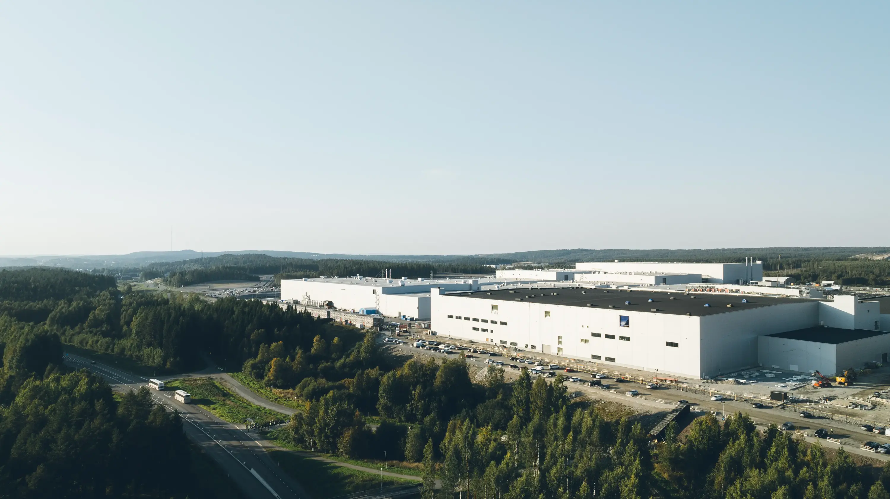
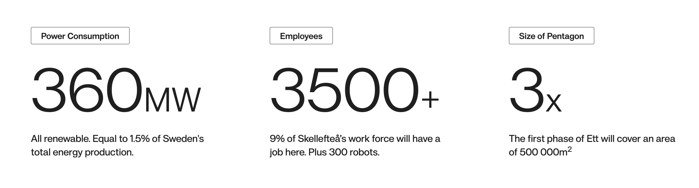
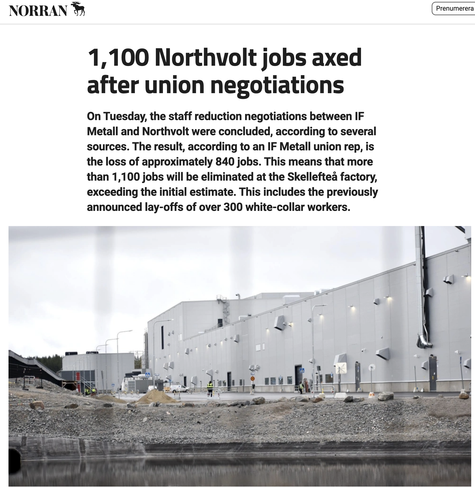
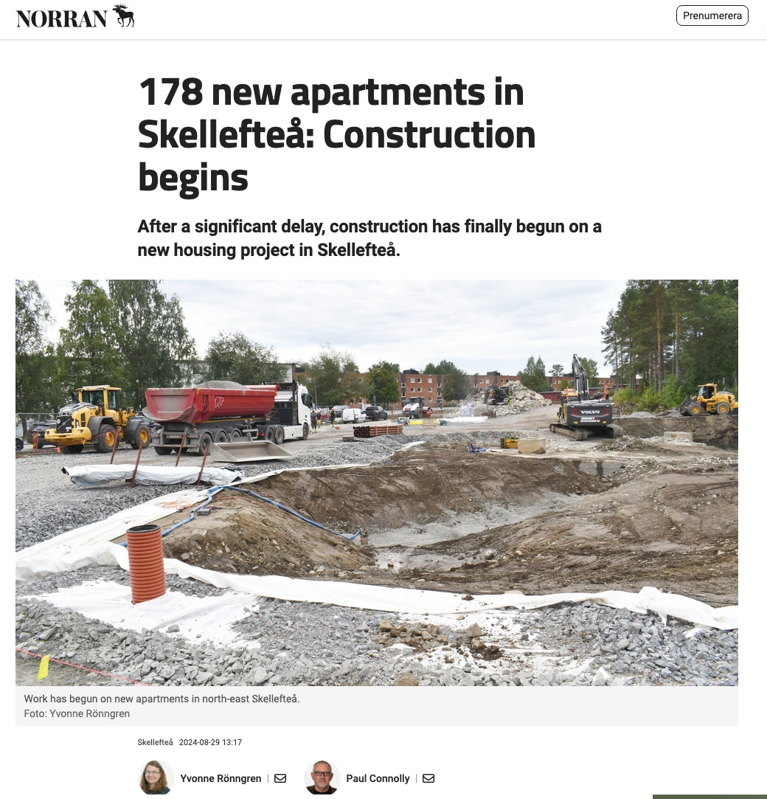
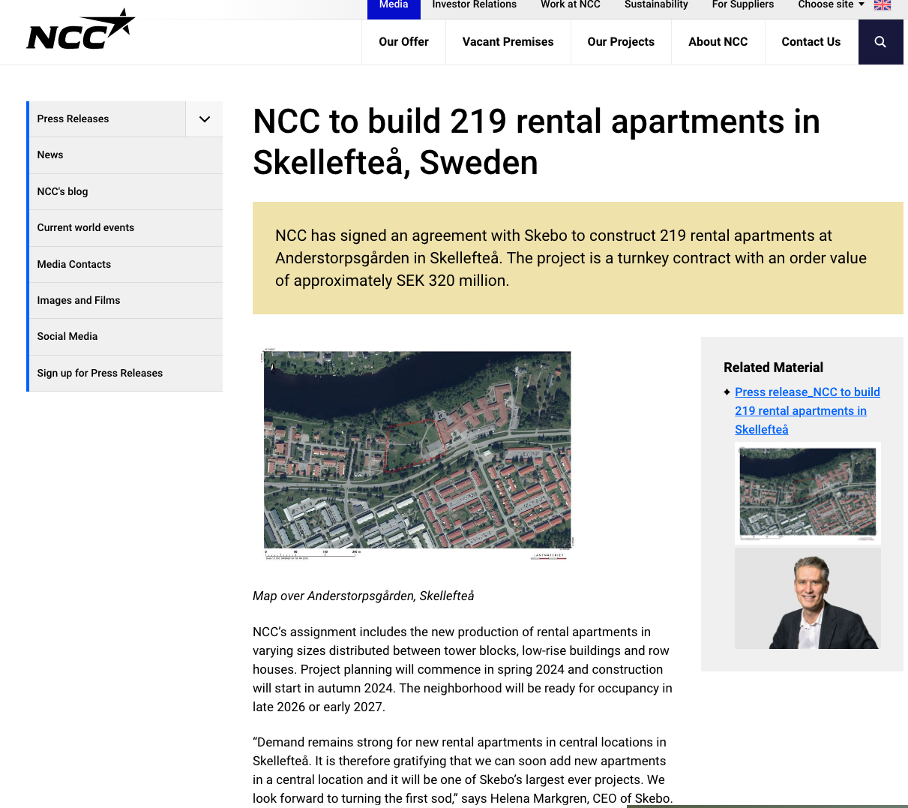
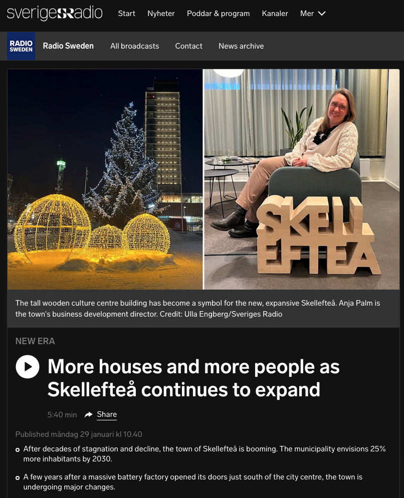
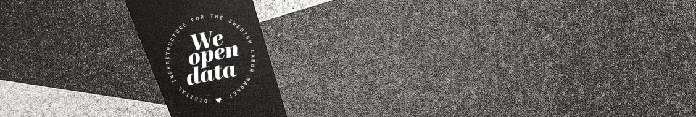

gantt
title Skellefteå Economic History Timeline
dateFormat YYYY
section Mining Era
Mining Boom :active, m1, 1924, 40y
section Post-Mining Decline
Decline Begins :m2, 1964, 53y
section Northvolt Era
Northvolt Announcement: m3, 2017, 2y
Factory Construction : m4, 2019, 3y
Northvolt Ett Operational :crit, m5, 2022, 3y
Paper Idea
Northvolt and technological spillovers in Skellefteå
2024-10-25
Introduction
Skellefteå went from a boom town with a nascent mining industry in 1924 to a post-mining decline in the 1960s.
It was somewhat unipolar with 1,200 employees of the region employed at Boliden in 1930s.
Then, in 2017, Northvolt announced that it would build a factory in Skellefteå, and another boom began.
We now have a shock that might be temporary or permanent, and we can look at the effects of this shock on the local economy; in terms of jobs, firms, and housing.

Research Question
It would be interesting to quantify what firms/jobs have been established in Skellefteå since Northvolt’s announcement and how they are related technologically to Northvolt.
Motivation
Topical
Would get media coverage - might be good for the project.
I have written the code to collect the data from the sources I suggest already for other projects, and Petrus has worked with the Job Ads data a great deal.
 
History of Skellefteå
Mining Era
Gold was discovered at Fågelmyran in 1924 and in Boliden, ore was extracted in 1926.
At the beginning of the 20th century, a new port was built in Skellefteå, and the area was also connected by railway and later on.
Post-Mining Decline
1967 The Boliden mine is closed down. Population growth slowed.
Northvolt Era
In 2017, Northvolt announced that it would build a factory in Skellefteå.
1,009 people moved to Skellefteå in 2022, and 2,140 moved to the municipality in 2023.
Recent Developments
Population Growth
Recent Developments
Housing starts:



Theory
How do we measure agglomeration effects?
In the economics literature, agglomeration effects are often measured by;
Land Prices and Rents: Higher land prices, particularly for commercial space, often signal agglomeration.
Wages: In densely populated areas or cities with strong agglomeration effects, wages tend to be higher. This is partly due to increased productivity and the competition for skilled labor, which drives up wages. Employment density is often correlated with wage levels.
Employment Density: The concentration of workers in a specific area can be an indicator of agglomeration.
Market Access: Firms in well-connected locations benefit from lower transportation and transaction costs. Proximity to suppliers, consumers, and collaborators enhances market access, which can be measured through trade flows and transportation costs between regions.
See Redding (2016)
Howe do we measure relatedness between firms
Business classifications: Firms are classified into industries based on their primary business activities, which we can access from Business Retriever.
Cosine similarity: We can compare word vectors from text descriptions from Business Retriever to measure product similarity between firms.
Textual network industry classification (TNIC): Identifies relatedness based on shared keywords across industries. Another approach.
Annual reports (e.g., 10-K filings): Used as a source of product market text data to compare businesses.
Data
Data Sources
Job Ads: Arbetsförmedlingen / JobTech have the historical job ads data for the region.
Real Estate Prices: Hemnet has the historical real estate prices for the region. +- 7,500 transactions recorded since 2013.
Firm Data: Business Retriever has the firm data for the region. 16,000 firms in the region.
Job ads
Time-span: 2006 - 2024
We know what kinds of jobs were being advertised prior to the Northvolt announcement and after.
We can look at the skills that were in demand and how they changed.

Firm Data examples
With Business Retriever, we can see the firms that have been established in the region and their business classifications.
We know:
- What the firms does
- The number of employees
- The turnover
- The industry classification
- The location of all workplaces
- The year of establishment
- The home addresses of their VD and address for styrelseledamöter

Byggbetong John Dahlgren Aktiebolag
Byggbetong John Dahlgren Aktiebolag is a Swedish company that specializes in the production and sale of concrete. The company was founded in 1972 and production takes place in the company’s own concrete plant in Skellefteå.
Competitors The company has several competitors in the concrete industry who are active on the Swedish market. Some of these competitors include Cementa AB, AB Betongindustri and Skanska Cementgjuteriet AB.
The industry The construction concrete industry is an important sector in the Swedish construction industry and the company faces challenges such as meeting increasing demands on the environment and sustainability, as well as producing high-quality concrete with high efficiency and in a cost-effective manner. In recent years, the industry has also experienced an increase in competition from imported concrete.